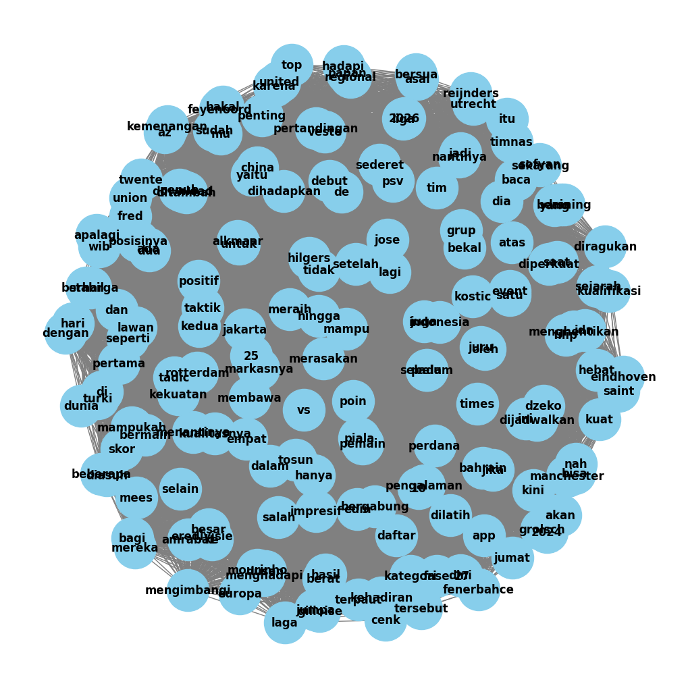
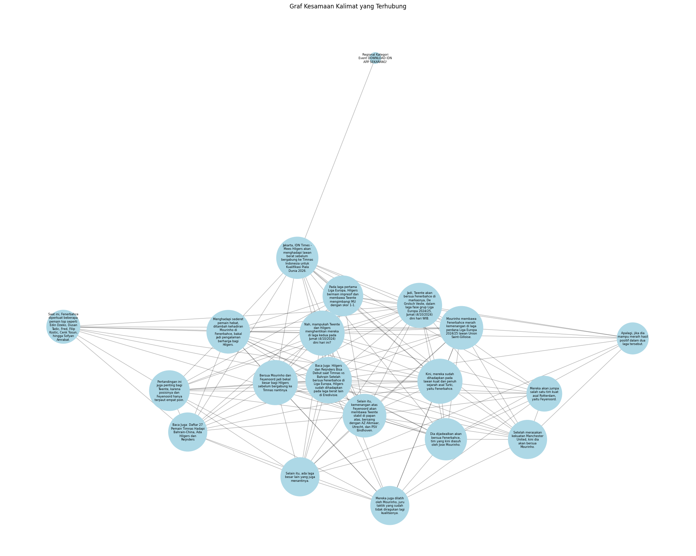

Crawling Artikel (Graph)#
Nama : Dohan Rizqi Hadityo#
NIM : 210411100195#
Kelas : Pencarian dan Penambangan Web#
import pandas as pd
import requests
from bs4 import BeautifulSoup
import csv
# URL dari artikel sepak bola di IDN Times
url = 'https://www.idntimes.com/sport/soccer/sandy-firdaus/sebelum-gabung-timnas-indonesia-mees-hilgers-lawan-mourinho'
# Membuat permintaan ke URL
response = requests.get(url)
# Inisialisasi data yang akan disimpan
# Mengambil ulang dan membersihkan data yang diminta
artikel_mees = []
if response.status_code == 200:
# Parsing halaman web
soup = BeautifulSoup(response.text, 'html.parser')
# Mengambil judul artikel
title = soup.find('h1').get_text().strip()
# Mengambil tanggal publikasi artikel dan membersihkan spasi berlebih
date = soup.find('time').get_text().strip()
# Mengambil isi artikel dengan membersihkan konten tambahan
content = soup.find_all('p')
article_text = '\n'.join([p.get_text().strip() for p in content if p.get_text().strip()])
# Simpan data dalam bentuk dictionary yang telah dibersihkan
artikel_mees.append({
'Title': title,
'Date': date,
'Content': article_text
})
# Membuat dataframe dari data yang telah dibersihkan
data_mees = pd.DataFrame(artikel_mees)
# Menampilkan dataframe yang bersih
data_mees
| Title | Date | Content | |
|---|---|---|---|
| 0 | Sebelum Gabung Timnas Indonesia, Mees Hilgers ... | 03 Oct 24 | 17:36 | Regional\nKategori\nEvent\nDOWNLOAD IDN APP SE... |
import string
import pandas as pd
import numpy as np
import re
from sklearn.feature_extraction.text import TfidfVectorizer
from sklearn.metrics.pairwise import cosine_similarity
# Proses case folding
def casefolding(Content):
if isinstance(Content, list):
# Jika Content adalah list, terapkan case folding pada setiap elemen
return [str(item).lower() for item in Content]
else:
# Jika Content adalah string, langsung terapkan case folding
return str(Content).lower()
# Terapkan fungsi casefolding pada kolom 'Content'
data_mees['Content'] = data_mees['Content'].apply(casefolding)
data_mees.head()
| Title | Date | Content | |
|---|---|---|---|
| 0 | Sebelum Gabung Timnas Indonesia, Mees Hilgers ... | 03 Oct 24 | 17:36 | regional\nkategori\nevent\ndownload idn app se... |
csv_filename = "artikel_mees_hilgers.csv"
data_mees.to_csv(csv_filename, index=False, encoding='utf-8')
print(f"Data berita telah disimpan ke {csv_filename}")
Data berita telah disimpan ke artikel_mees_hilgers.csv
data_mees = pd.read_csv("artikel_mees_hilgers.csv", sep=',', encoding='latin1')
data_mees.head()
| Title | Date | Content | |
|---|---|---|---|
| 0 | Sebelum Gabung Timnas Indonesia, Mees Hilgers ... | 03 Oct 24 | 17:36 | regional\nkategori\nevent\ndownload idn app se... |
def cleansing(Content):
# Menghapus whitespace di awal dan akhir teks
Content = Content.strip()
# Menghapus tanda baca dan karakter khusus
Content = re.sub(f"[{string.punctuation}]", '', Content)
# Menghapus angka
Content = re.sub(r'\d+', '', Content)
# Menghapus huruf tunggal (opsional, tergantung kebutuhan)
Content = re.sub(r"\b[a-zA-Z]\b", "", Content)
# Menghapus karakter-karakter non-standar seperti â
Content = re.sub(r'[^\x00-\x7F]+', '', Content)
# Menghapus spasi ganda
Content = re.sub(r'\s+', ' ', Content)
return Content
# Terapkan fungsi cleansing pada kolom 'Content'
data_mees['Content'] = data_mees['Content'].apply(cleansing)
# Menampilkan 5 baris pertama
data_mees.head(5)
| Title | Date | Content | |
|---|---|---|---|
| 0 | Sebelum Gabung Timnas Indonesia, Mees Hilgers ... | 03 Oct 24 | 17:36 | regional kategori event download idn app sekar... |
import nltk
nltk.download('punkt')
from nltk.tokenize import sent_tokenize, word_tokenize
[nltk_data] Downloading package punkt to /root/nltk_data...
[nltk_data] Package punkt is already up-to-date!
import pandas as pd
from nltk.tokenize import sent_tokenize, word_tokenize # Tambahkan ini
# Ekstraksi kalimat dari konten artikel
sentences = sent_tokenize(article_text)
# Tokenisasi tiap kalimat menjadi term
terms_per_sentence = [word_tokenize(sentence) for sentence in sentences]
# Membuat objek yang menyimpan hasil term dari setiap kalimat
extracted_terms = [{'Sentence': sentence, 'Terms': terms} for sentence, terms in zip(sentences, terms_per_sentence)]
# Menampilkan hasilnya sebagai dataframe
df_terms = pd.DataFrame(extracted_terms)
# Menampilkan dataframe
df_terms
| Sentence | Terms | |
|---|---|---|
| 0 | Regional\nKategori\nEvent\nDOWNLOAD IDN APP SE... | [Regional, Kategori, Event, DOWNLOAD, IDN, APP... |
| 1 | Jakarta, IDN Times - Mees Hilgers akan menghad... | [Jakarta, ,, IDN, Times, -, Mees, Hilgers, aka... |
| 2 | Dia dijadwalkan akan bersua Fenerbahce, tim ya... | [Dia, dijadwalkan, akan, bersua, Fenerbahce, ,... |
| 3 | Jadi, Twente akan bersua Fenerbahce di markasn... | [Jadi, ,, Twente, akan, bersua, Fenerbahce, di... |
| 4 | Setelah merasakan kekuatan Manchester United, ... | [Setelah, merasakan, kekuatan, Manchester, Uni... |
| 5 | Pada laga pertama Liga Europa, Hilgers bermain... | [Pada, laga, pertama, Liga, Europa, ,, Hilgers... |
| 6 | Kini, mereka sudah dihadapkan pada lawan kuat ... | [Kini, ,, mereka, sudah, dihadapkan, pada, law... |
| 7 | Saat ini, Fenerbahce diperkuat beberapa pemain... | [Saat, ini, ,, Fenerbahce, diperkuat, beberapa... |
| 8 | Mereka juga dilatih oleh Mourinho, juru taktik... | [Mereka, juga, dilatih, oleh, Mourinho, ,, jur... |
| 9 | Menghadapi sederet pemain hebat, ditambah keha... | [Menghadapi, sederet, pemain, hebat, ,, ditamb... |
| 10 | Selain itu, ada laga besar lain yang juga mena... | [Selain, itu, ,, ada, laga, besar, lain, yang,... |
| 11 | Baca Juga: Hilgers dan Reijnders Bisa Debut sa... | [Baca, Juga, :, Hilgers, dan, Reijnders, Bisa,... |
| 12 | Mereka akan jumpa salah satu tim kuat asal Rot... | [Mereka, akan, jumpa, salah, satu, tim, kuat, ... |
| 13 | Pertandingan ini juga penting bagi Twente, kar... | [Pertandingan, ini, juga, penting, bagi, Twent... |
| 14 | Selain itu, kemenangan atas Feyenoord akan mem... | [Selain, itu, ,, kemenangan, atas, Feyenoord, ... |
| 15 | Bersua Mourinho dan Feyenoord jadi bekal besar... | [Bersua, Mourinho, dan, Feyenoord, jadi, bekal... |
| 16 | Apalagi, jika dia mampu meraih hasil positif d... | [Apalagi, ,, jika, dia, mampu, meraih, hasil, ... |
| 17 | Mourinho membawa Fenerbahce meraih kemenangan ... | [Mourinho, membawa, Fenerbahce, meraih, kemena... |
| 18 | Nah, mampukah Twente dan Hilgers menghentikan ... | [Nah, ,, mampukah, Twente, dan, Hilgers, mengh... |
| 19 | Baca Juga: Daftar 27 Pemain Timnas Hadapi Bahr... | [Baca, Juga, :, Daftar, 27, Pemain, Timnas, Ha... |
import pandas as pd
from nltk.tokenize import sent_tokenize, word_tokenize # Pastikan Anda sudah mengimpor ini
# Ekstraksi kalimat dari konten artikel
sentences = sent_tokenize(article_text)
# Tokenisasi tiap kalimat menjadi term
terms_per_sentence = [word_tokenize(sentence) for sentence in sentences]
# Membuat objek yang menyimpan hasil term dari setiap kalimat
extracted_terms = [{'Sentence': sentence, 'Terms': terms, 'Term Count': len(terms)}
for sentence, terms in zip(sentences, terms_per_sentence)]
# Menampilkan hasilnya sebagai dataframe
df_terms = pd.DataFrame(extracted_terms)
# Menghitung total term dari semua kalimat
total_terms = df_terms['Term Count'].sum()
# Menampilkan dataframe
print(df_terms)
# Menampilkan total jumlah term
print(f"Total jumlah term: {total_terms}")
Sentence \
0 Regional\nKategori\nEvent\nDOWNLOAD IDN APP SE...
1 Jakarta, IDN Times - Mees Hilgers akan menghad...
2 Dia dijadwalkan akan bersua Fenerbahce, tim ya...
3 Jadi, Twente akan bersua Fenerbahce di markasn...
4 Setelah merasakan kekuatan Manchester United, ...
5 Pada laga pertama Liga Europa, Hilgers bermain...
6 Kini, mereka sudah dihadapkan pada lawan kuat ...
7 Saat ini, Fenerbahce diperkuat beberapa pemain...
8 Mereka juga dilatih oleh Mourinho, juru taktik...
9 Menghadapi sederet pemain hebat, ditambah keha...
10 Selain itu, ada laga besar lain yang juga mena...
11 Baca Juga: Hilgers dan Reijnders Bisa Debut sa...
12 Mereka akan jumpa salah satu tim kuat asal Rot...
13 Pertandingan ini juga penting bagi Twente, kar...
14 Selain itu, kemenangan atas Feyenoord akan mem...
15 Bersua Mourinho dan Feyenoord jadi bekal besar...
16 Apalagi, jika dia mampu meraih hasil positif d...
17 Mourinho membawa Fenerbahce meraih kemenangan ...
18 Nah, mampukah Twente dan Hilgers menghentikan ...
19 Baca Juga: Daftar 27 Pemain Timnas Hadapi Bahr...
Terms Term Count
0 [Regional, Kategori, Event, DOWNLOAD, IDN, APP... 8
1 [Jakarta, ,, IDN, Times, -, Mees, Hilgers, aka... 22
2 [Dia, dijadwalkan, akan, bersua, Fenerbahce, ,... 14
3 [Jadi, ,, Twente, akan, bersua, Fenerbahce, di... 29
4 [Setelah, merasakan, kekuatan, Manchester, Uni... 12
5 [Pada, laga, pertama, Liga, Europa, ,, Hilgers... 18
6 [Kini, ,, mereka, sudah, dihadapkan, pada, law... 17
7 [Saat, ini, ,, Fenerbahce, diperkuat, beberapa... 27
8 [Mereka, juga, dilatih, oleh, Mourinho, ,, jur... 15
9 [Menghadapi, sederet, pemain, hebat, ,, ditamb... 18
10 [Selain, itu, ,, ada, laga, besar, lain, yang,... 11
11 [Baca, Juga, :, Hilgers, dan, Reijnders, Bisa,... 29
12 [Mereka, akan, jumpa, salah, satu, tim, kuat, ... 13
13 [Pertandingan, ini, juga, penting, bagi, Twent... 16
14 [Selain, itu, ,, kemenangan, atas, Feyenoord, ... 25
15 [Bersua, Mourinho, dan, Feyenoord, jadi, bekal... 15
16 [Apalagi, ,, jika, dia, mampu, meraih, hasil, ... 13
17 [Mourinho, membawa, Fenerbahce, meraih, kemena... 15
18 [Nah, ,, mampukah, Twente, dan, Hilgers, mengh... 20
19 [Baca, Juga, :, Daftar, 27, Pemain, Timnas, Ha... 14
Total jumlah term: 351
csv_filename = "artikel_mees_hilgers_ekstract_term.csv"
df_terms.to_csv(csv_filename, index=False, encoding='utf-8')
print(f"Data berita telah disimpan ke {csv_filename}")
Data berita telah disimpan ke artikel_mees_hilgers_ekstract_term.csv
pip install Sastrawi
Requirement already satisfied: Sastrawi in /usr/local/lib/python3.10/dist-packages (1.0.1)
import pandas as pd
from sklearn.feature_extraction.text import TfidfVectorizer
from nltk.tokenize import sent_tokenize, word_tokenize
# Dengan asumsi kita memiliki article_text
sentences = sent_tokenize(article_text)
terms_per_sentence = [word_tokenize(sentence) for sentence in sentences]
extracted_terms = [{'Sentence': sentence, 'Terms': terms} for sentence, terms in zip(sentences, terms_per_sentence)]
df_terms = pd.DataFrame(extracted_terms)
# Menggabungkan terms menjadi string untuk setiap kalimat
df_terms['Terms_String'] = df_terms['Terms'].apply(' '.join)
# Membuat TF-IDF Vectorizer
tfidf_vectorizer = TfidfVectorizer()
# Fit dan transform data
tfidf_matrix = tfidf_vectorizer.fit_transform(df_terms['Terms_String'])
# Mendapatkan nama-nama feature (terms)
feature_names = tfidf_vectorizer.get_feature_names_out()
# Membuat DataFrame untuk nilai TF-IDF
tfidf_df = pd.DataFrame(tfidf_matrix.toarray(), columns=feature_names)
# Menambahkan kolom Sentence
tfidf_df['Sentence'] = df_terms['Sentence']
# Melelehkan (melting) DataFrame untuk format yang lebih mudah dibaca
melted_tfidf = tfidf_df.melt(id_vars=['Sentence'], var_name='Term', value_name='TF-IDF')
# Menghapus baris dengan nilai TF-IDF 0
melted_tfidf = melted_tfidf[melted_tfidf['TF-IDF'] != 0]
# Mengurutkan berdasarkan nilai TF-IDF tertinggi
melted_tfidf = melted_tfidf.sort_values('TF-IDF', ascending=False)
# Menampilkan hasil
print(melted_tfidf)
Sentence Term TF-IDF
254 Selain itu, kemenangan atas Feyenoord akan mem... atas 0.474210
2170 Selain itu, ada laga besar lain yang juga mena... menantinya 0.398786
2680 Regional\nKategori\nEvent\nDOWNLOAD IDN APP SE... regional 0.384256
920 Regional\nKategori\nEvent\nDOWNLOAD IDN APP SE... download 0.384256
200 Regional\nKategori\nEvent\nDOWNLOAD IDN APP SE... app 0.384256
... ... ... ...
1943 Jadi, Twente akan bersua Fenerbahce di markasn... laga 0.137393
1163 Jadi, Twente akan bersua Fenerbahce di markasn... fenerbahce 0.137393
1167 Saat ini, Fenerbahce diperkuat beberapa pemain... fenerbahce 0.136788
651 Baca Juga: Hilgers dan Reijnders Bisa Debut sa... dan 0.130792
654 Selain itu, kemenangan atas Feyenoord akan mem... dan 0.130694
[296 rows x 3 columns]
import pandas as pd
from sklearn.feature_extraction.text import TfidfVectorizer
from nltk.tokenize import word_tokenize
# Dengan asumsi kita memiliki article_text
terms = word_tokenize(article_text)
# Menggabungkan terms menjadi string (seluruh teks sebagai satu dokumen)
terms_string = ' '.join(terms)
# Membuat TF-IDF Vectorizer
tfidf_vectorizer_terms = TfidfVectorizer()
# Fit dan transform data (menggunakan seluruh dokumen)
tfidf_matrix_terms = tfidf_vectorizer_terms.fit_transform([terms_string])
# Mendapatkan nama-nama feature (terms)
feature_names_terms = tfidf_vectorizer_terms.get_feature_names_out()
# Membuat DataFrame untuk nilai TF-IDF
tfidf_df_terms = pd.DataFrame(tfidf_matrix_terms.toarray(), columns=feature_names_terms)
# Melelehkan (melting) DataFrame untuk format yang lebih mudah dibaca
melted_tfidf_terms = tfidf_df_terms.melt(var_name='Term', value_name='TF-IDF')
# Menghapus baris dengan nilai TF-IDF 0
melted_tfidf_terms = melted_tfidf_terms[melted_tfidf_terms['TF-IDF'] != 0]
# Mengurutkan berdasarkan nilai TF-IDF tertinggi
melted_tfidf_terms = melted_tfidf_terms.sort_values('TF-IDF', ascending=False)
# Menampilkan hasil
print(melted_tfidf_terms)
Term TF-IDF
70 hilgers 0.271851
32 dan 0.271851
58 fenerbahce 0.237870
36 di 0.237870
97 laga 0.237870
.. ... ...
85 karena 0.033981
84 juru 0.033981
83 jumpa 0.033981
33 de 0.033981
86 kategori 0.033981
[173 rows x 2 columns]
import pandas as pd
from sklearn.feature_extraction.text import TfidfVectorizer
from sklearn.metrics.pairwise import cosine_similarity
import networkx as nx
import numpy as np
import matplotlib.pyplot as plt
from nltk.tokenize import word_tokenize
# Menghitung cosine similarity antar terms
cosine_sim_matrix = cosine_similarity(tfidf_matrix_terms.T)
# Membuat adjacency matrix berdasarkan threshold 0.1-0.4 jadi 0, dan 0.5-0.9 jadi 1
threshold_min = 0.1
threshold_max = 0.4
adjacency_matrix = np.where((cosine_sim_matrix >= threshold_min) & (cosine_sim_matrix <= threshold_max), 0, cosine_sim_matrix)
adjacency_matrix = np.where((cosine_sim_matrix > 0.4) & (cosine_sim_matrix <= 0.9), 1, adjacency_matrix)
# Membuat graph dari adjacency matrix
G = nx.Graph()
# Menambahkan node (terms) ke dalam graph
for term in feature_names_terms:
G.add_node(term)
# Menambahkan edge berdasarkan adjacency matrix
for i in range(len(feature_names_terms)):
for j in range(i + 1, len(feature_names_terms)):
if adjacency_matrix[i, j] == 1:
G.add_edge(feature_names_terms[i], feature_names_terms[j])
# Visualisasi graph
plt.figure(figsize=(10, 10))
pos = nx.spring_layout(G)
nx.draw(G, pos, with_labels=True, node_color='skyblue', edge_color='gray', node_size=2000, font_size=12, font_weight='bold')
plt.show()

# Menghitung closeness centrality, degree centrality, dan betweenness centrality
closeness_centrality = nx.closeness_centrality(G)
degree_centrality = nx.degree_centrality(G)
betweenness_centrality = nx.betweenness_centrality(G)
# Menyusun hasil dalam DataFrame untuk menampilkan secara rapi
centrality_df = pd.DataFrame({
'Term': list(G.nodes),
'Closeness Centrality': [closeness_centrality[node] for node in G.nodes],
'Degree Centrality': [degree_centrality[node] for node in G.nodes],
'Betweenness Centrality': [betweenness_centrality[node] for node in G.nodes]
})
# Mengurutkan berdasarkan Degree Centrality
centrality_df = centrality_df.sort_values('Degree Centrality', ascending=False)
# Menampilkan hasil
print(centrality_df)
Term Closeness Centrality Degree Centrality \
0 10 1.0 1.0
119 oleh 1.0 1.0
111 mengimbangi 1.0 1.0
112 meraih 1.0 1.0
113 merasakan 1.0 1.0
.. ... ... ...
59 feyenoord 1.0 1.0
60 filip 1.0 1.0
61 fred 1.0 1.0
62 gilloise 1.0 1.0
172 yang 1.0 1.0
Betweenness Centrality
0 0.0
119 0.0
111 0.0
112 0.0
113 0.0
.. ...
59 0.0
60 0.0
61 0.0
62 0.0
172 0.0
[173 rows x 4 columns]
import numpy as np
import pandas as pd
from scipy.spatial.distance import cosine
# Langkah 1: Pivot kembali DataFrame yang telah di-melt ke format lebar
tfidf_wide = melted_tfidf.pivot(index='Sentence', columns='Term', values='TF-IDF').fillna(0)
# Langkah 2: Hitung kesamaan kosinus antar kalimat
num_sentences = len(tfidf_wide)
matrix_adjacency = np.zeros((num_sentences, num_sentences))
for i in range(num_sentences):
for j in range(i, num_sentences): # Hanya perlu menghitung segitiga atas
if i == j:
matrix_adjacency[i][j] = 1.0 # Kalimat sepenuhnya mirip dengan dirinya sendiri
else:
similarity = 1 - cosine(tfidf_wide.iloc[i], tfidf_wide.iloc[j])
matrix_adjacency[i][j] = similarity
matrix_adjacency[j][i] = similarity # Matriks simetris
# Buat DataFrame untuk visualisasi yang lebih baik
adjacency_df = pd.DataFrame(matrix_adjacency,
index=tfidf_wide.index,
columns=tfidf_wide.index)
# Tampilkan matriks keterhubungan
print("Matriks Keterhubungan:")
print(adjacency_df)
# Opsional: Anda dapat menetapkan ambang batas untuk mempertimbangkan hanya koneksi yang kuat
threshold = 0.5
adjacency_df_thresholded = adjacency_df.where(adjacency_df > threshold, 0)
print("\nMatriks Keterhubungan (dengan ambang batas):")
print(adjacency_df_thresholded)
# Opsional: Simpan ke CSV
adjacency_df.to_csv('matrix_adjacency.csv')
adjacency_df_thresholded.to_csv('matrix_adjacency_thresholded.csv')
Matriks Keterhubungan:
Sentence Apalagi, jika dia mampu meraih hasil positif dalam dua laga tersebut. \
Sentence
Apalagi, jika dia mampu meraih hasil positif da... 1.000000
Baca Juga: Daftar 27 Pemain Timnas Hadapi Bahra... 0.000000
Baca Juga: Hilgers dan Reijnders Bisa Debut saa... 0.026442
Bersua Mourinho dan Feyenoord jadi bekal besar ... 0.000000
Dia dijadwalkan akan bersua Fenerbahce, tim yan... 0.072040
Jadi, Twente akan bersua Fenerbahce di markasny... 0.084797
Jakarta, IDN Times - Mees Hilgers akan menghada... 0.000000
Kini, mereka sudah dihadapkan pada lawan kuat d... 0.000000
Menghadapi sederet pemain hebat, ditambah kehad... 0.000000
Mereka akan jumpa salah satu tim kuat asal Rott... 0.000000
Mereka juga dilatih oleh Mourinho, juru taktik ... 0.000000
Mourinho membawa Fenerbahce meraih kemenangan d... 0.110461
Nah, mampukah Twente dan Hilgers menghentikan m... 0.033239
Pada laga pertama Liga Europa, Hilgers bermain ... 0.034508
Pertandingan ini juga penting bagi Twente, kare... 0.000000
Regional\nKategori\nEvent\nDOWNLOAD IDN APP SEK... 0.000000
Saat ini, Fenerbahce diperkuat beberapa pemain ... 0.000000
Selain itu, ada laga besar lain yang juga menan... 0.044440
Selain itu, kemenangan atas Feyenoord akan memb... 0.000000
Setelah merasakan kekuatan Manchester United, k... 0.075645
Sentence Baca Juga: Daftar 27 Pemain Timnas Hadapi Bahrain-China, Ada Hilgers dan Reijnders \
Sentence
Apalagi, jika dia mampu meraih hasil positif da... 0.000000
Baca Juga: Daftar 27 Pemain Timnas Hadapi Bahra... 1.000000
Baca Juga: Hilgers dan Reijnders Bisa Debut saa... 0.332892
Bersua Mourinho dan Feyenoord jadi bekal besar ... 0.128914
Dia dijadwalkan akan bersua Fenerbahce, tim yan... 0.000000
Jadi, Twente akan bersua Fenerbahce di markasny... 0.000000
Jakarta, IDN Times - Mees Hilgers akan menghada... 0.072356
Kini, mereka sudah dihadapkan pada lawan kuat d... 0.031938
Menghadapi sederet pemain hebat, ditambah kehad... 0.095380
Mereka akan jumpa salah satu tim kuat asal Rott... 0.000000
Mereka juga dilatih oleh Mourinho, juru taktik ... 0.045821
Mourinho membawa Fenerbahce meraih kemenangan d... 0.000000
Nah, mampukah Twente dan Hilgers menghentikan m... 0.063183
Pada laga pertama Liga Europa, Hilgers bermain ... 0.065595
Pertandingan ini juga penting bagi Twente, kare... 0.074545
Regional\nKategori\nEvent\nDOWNLOAD IDN APP SEK... 0.000000
Saat ini, Fenerbahce diperkuat beberapa pemain ... 0.048005
Selain itu, ada laga besar lain yang juga menan... 0.159720
Selain itu, kemenangan atas Feyenoord akan memb... 0.023563
Setelah merasakan kekuatan Manchester United, k... 0.000000
Sentence Baca Juga: Hilgers dan Reijnders Bisa Debut saat Timnas vs Bahrain\nSetelah bersua Fenerbahce di Liga Europa, Hilgers sudah dihadapkan pada laga berat lain di Eredivisie. \
Sentence
Apalagi, jika dia mampu meraih hasil positif da... 0.026442
Baca Juga: Daftar 27 Pemain Timnas Hadapi Bahra... 0.332892
Baca Juga: Hilgers dan Reijnders Bisa Debut saa... 1.000000
Bersua Mourinho dan Feyenoord jadi bekal besar ... 0.156817
Dia dijadwalkan akan bersua Fenerbahce, tim yan... 0.066696
Jadi, Twente akan bersua Fenerbahce di markasny... 0.165664
Jakarta, IDN Times - Mees Hilgers akan menghada... 0.119718
Kini, mereka sudah dihadapkan pada lawan kuat d... 0.196548
Menghadapi sederet pemain hebat, ditambah kehad... 0.129127
Mereka akan jumpa salah satu tim kuat asal Rott... 0.000000
Mereka juga dilatih oleh Mourinho, juru taktik ... 0.079525
Mourinho membawa Fenerbahce meraih kemenangan d... 0.183077
Nah, mampukah Twente dan Hilgers menghentikan m... 0.187371
Pada laga pertama Liga Europa, Hilgers bermain ... 0.214481
Pertandingan ini juga penting bagi Twente, kare... 0.054079
Regional\nKategori\nEvent\nDOWNLOAD IDN APP SEK... 0.000000
Saat ini, Fenerbahce diperkuat beberapa pemain ... 0.061802
Selain itu, ada laga besar lain yang juga menan... 0.148402
Selain itu, kemenangan atas Feyenoord akan memb... 0.061216
Setelah merasakan kekuatan Manchester United, k... 0.107783
Sentence Bersua Mourinho dan Feyenoord jadi bekal besar bagi Hilgers sebelum bergabung ke Timnas nantinya. \
Sentence
Apalagi, jika dia mampu meraih hasil positif da... 0.000000
Baca Juga: Daftar 27 Pemain Timnas Hadapi Bahra... 0.128914
Baca Juga: Hilgers dan Reijnders Bisa Debut saa... 0.156817
Bersua Mourinho dan Feyenoord jadi bekal besar ... 1.000000
Dia dijadwalkan akan bersua Fenerbahce, tim yan... 0.099960
Jadi, Twente akan bersua Fenerbahce di markasny... 0.084921
Jakarta, IDN Times - Mees Hilgers akan menghada... 0.271380
Kini, mereka sudah dihadapkan pada lawan kuat d... 0.032738
Menghadapi sederet pemain hebat, ditambah kehad... 0.200388
Mereka akan jumpa salah satu tim kuat asal Rott... 0.060573
Mereka juga dilatih oleh Mourinho, juru taktik ... 0.040760
Mourinho membawa Fenerbahce meraih kemenangan d... 0.040128
Nah, mampukah Twente dan Hilgers menghentikan m... 0.064764
Pada laga pertama Liga Europa, Hilgers bermain ... 0.067236
Pertandingan ini juga penting bagi Twente, kare... 0.147720
Regional\nKategori\nEvent\nDOWNLOAD IDN APP SEK... 0.000000
Saat ini, Fenerbahce diperkuat beberapa pemain ... 0.000000
Selain itu, ada laga besar lain yang juga menan... 0.103306
Selain itu, kemenangan atas Feyenoord akan memb... 0.066120
Setelah merasakan kekuatan Manchester United, k... 0.104963
Sentence Dia dijadwalkan akan bersua Fenerbahce, tim yang kini diasuh oleh Jose Mourinho. \
Sentence
Apalagi, jika dia mampu meraih hasil positif da... 0.072040
Baca Juga: Daftar 27 Pemain Timnas Hadapi Bahra... 0.000000
Baca Juga: Hilgers dan Reijnders Bisa Debut saa... 0.066696
Bersua Mourinho dan Feyenoord jadi bekal besar ... 0.099960
Dia dijadwalkan akan bersua Fenerbahce, tim yan... 1.000000
Jadi, Twente akan bersua Fenerbahce di markasny... 0.098323
Jakarta, IDN Times - Mees Hilgers akan menghada... 0.035153
Kini, mereka sudah dihadapkan pada lawan kuat d... 0.110465
Menghadapi sederet pemain hebat, ditambah kehad... 0.077923
Mereka akan jumpa salah satu tim kuat asal Rott... 0.140820
Mereka juga dilatih oleh Mourinho, juru taktik ... 0.196490
Mourinho membawa Fenerbahce meraih kemenangan d... 0.079357
Nah, mampukah Twente dan Hilgers menghentikan m... 0.000000
Pada laga pertama Liga Europa, Hilgers bermain ... 0.000000
Pertandingan ini juga penting bagi Twente, kare... 0.000000
Regional\nKategori\nEvent\nDOWNLOAD IDN APP SEK... 0.000000
Saat ini, Fenerbahce diperkuat beberapa pemain ... 0.028335
Selain itu, ada laga besar lain yang juga menan... 0.088632
Selain itu, kemenangan atas Feyenoord akan memb... 0.032845
Setelah merasakan kekuatan Manchester United, k... 0.326881
Sentence Jadi, Twente akan bersua Fenerbahce di markasnya, De Grolsch Veste, dalam laga fase grup Liga Europa 2024/25, Jumat (4/10/2024) dini hari WIB. \
Sentence
Apalagi, jika dia mampu meraih hasil positif da... 0.084797
Baca Juga: Daftar 27 Pemain Timnas Hadapi Bahra... 0.000000
Baca Juga: Hilgers dan Reijnders Bisa Debut saa... 0.165664
Bersua Mourinho dan Feyenoord jadi bekal besar ... 0.084921
Dia dijadwalkan akan bersua Fenerbahce, tim yan... 0.098323
Jadi, Twente akan bersua Fenerbahce di markasny... 1.000000
Jakarta, IDN Times - Mees Hilgers akan menghada... 0.023316
Kini, mereka sudah dihadapkan pada lawan kuat d... 0.025891
Menghadapi sederet pemain hebat, ditambah kehad... 0.095868
Mereka akan jumpa salah satu tim kuat asal Rott... 0.031444
Mereka juga dilatih oleh Mourinho, juru taktik ... 0.000000
Mourinho membawa Fenerbahce meraih kemenangan d... 0.298003
Nah, mampukah Twente dan Hilgers menghentikan m... 0.386965
Pada laga pertama Liga Europa, Hilgers bermain ... 0.134344
Pertandingan ini juga penting bagi Twente, kare... 0.031932
Regional\nKategori\nEvent\nDOWNLOAD IDN APP SEK... 0.000000
Saat ini, Fenerbahce diperkuat beberapa pemain ... 0.018794
Selain itu, ada laga besar lain yang juga menan... 0.032126
Selain itu, kemenangan atas Feyenoord akan memb... 0.068675
Setelah merasakan kekuatan Manchester United, k... 0.073359
Sentence Jakarta, IDN Times - Mees Hilgers akan menghadapi lawan berat sebelum bergabung ke Timnas Indonesia untuk Kualifikasi Piala Dunia 2026. \
Sentence
Apalagi, jika dia mampu meraih hasil positif da... 0.000000
Baca Juga: Daftar 27 Pemain Timnas Hadapi Bahra... 0.072356
Baca Juga: Hilgers dan Reijnders Bisa Debut saa... 0.119718
Bersua Mourinho dan Feyenoord jadi bekal besar ... 0.271380
Dia dijadwalkan akan bersua Fenerbahce, tim yan... 0.035153
Jadi, Twente akan bersua Fenerbahce di markasny... 0.023316
Jakarta, IDN Times - Mees Hilgers akan menghada... 1.000000
Kini, mereka sudah dihadapkan pada lawan kuat d... 0.051309
Menghadapi sederet pemain hebat, ditambah kehad... 0.084917
Mereka akan jumpa salah satu tim kuat asal Rott... 0.034053
Mereka juga dilatih oleh Mourinho, juru taktik ... 0.000000
Mourinho membawa Fenerbahce meraih kemenangan d... 0.048731
Nah, mampukah Twente dan Hilgers menghentikan m... 0.026023
Pada laga pertama Liga Europa, Hilgers bermain ... 0.027016
Pertandingan ini juga penting bagi Twente, kare... 0.000000
Regional\nKategori\nEvent\nDOWNLOAD IDN APP SEK... 0.075343
Saat ini, Fenerbahce diperkuat beberapa pemain ... 0.000000
Selain itu, ada laga besar lain yang juga menan... 0.000000
Selain itu, kemenangan atas Feyenoord akan memb... 0.023593
Setelah merasakan kekuatan Manchester United, k... 0.036912
Sentence Kini, mereka sudah dihadapkan pada lawan kuat dan penuh sejarah asal Turki, yaitu Fenerbahce. \
Sentence
Apalagi, jika dia mampu meraih hasil positif da... 0.000000
Baca Juga: Daftar 27 Pemain Timnas Hadapi Bahra... 0.031938
Baca Juga: Hilgers dan Reijnders Bisa Debut saa... 0.196548
Bersua Mourinho dan Feyenoord jadi bekal besar ... 0.032738
Dia dijadwalkan akan bersua Fenerbahce, tim yan... 0.110465
Jadi, Twente akan bersua Fenerbahce di markasny... 0.025891
Jakarta, IDN Times - Mees Hilgers akan menghada... 0.051309
Kini, mereka sudah dihadapkan pada lawan kuat d... 1.000000
Menghadapi sederet pemain hebat, ditambah kehad... 0.033117
Mereka akan jumpa salah satu tim kuat asal Rott... 0.313010
Mereka juga dilatih oleh Mourinho, juru taktik ... 0.115295
Mourinho membawa Fenerbahce meraih kemenangan d... 0.095444
Nah, mampukah Twente dan Hilgers menghentikan m... 0.130342
Pada laga pertama Liga Europa, Hilgers bermain ... 0.082777
Pertandingan ini juga penting bagi Twente, kare... 0.029450
Regional\nKategori\nEvent\nDOWNLOAD IDN APP SEK... 0.000000
Saat ini, Fenerbahce diperkuat beberapa pemain ... 0.025777
Selain itu, ada laga besar lain yang juga menan... 0.000000
Selain itu, kemenangan atas Feyenoord akan memb... 0.023152
Setelah merasakan kekuatan Manchester United, k... 0.075005
Sentence Menghadapi sederet pemain hebat, ditambah kehadiran Mourinho di Fenerbahce, bakal jadi pengalaman berharga bagi Hilgers. \
Sentence
Apalagi, jika dia mampu meraih hasil positif da... 0.000000
Baca Juga: Daftar 27 Pemain Timnas Hadapi Bahra... 0.095380
Baca Juga: Hilgers dan Reijnders Bisa Debut saa... 0.129127
Bersua Mourinho dan Feyenoord jadi bekal besar ... 0.200388
Dia dijadwalkan akan bersua Fenerbahce, tim yan... 0.077923
Jadi, Twente akan bersua Fenerbahce di markasny... 0.095868
Jakarta, IDN Times - Mees Hilgers akan menghada... 0.084917
Kini, mereka sudah dihadapkan pada lawan kuat d... 0.033117
Menghadapi sederet pemain hebat, ditambah kehad... 1.000000
Mereka akan jumpa salah satu tim kuat asal Rott... 0.000000
Mereka juga dilatih oleh Mourinho, juru taktik ... 0.036438
Mourinho membawa Fenerbahce meraih kemenangan d... 0.103200
Nah, mampukah Twente dan Hilgers menghentikan m... 0.065790
Pada laga pertama Liga Europa, Hilgers bermain ... 0.031909
Pertandingan ini juga penting bagi Twente, kare... 0.056870
Regional\nKategori\nEvent\nDOWNLOAD IDN APP SEK... 0.000000
Saat ini, Fenerbahce diperkuat beberapa pemain ... 0.068028
Selain itu, ada laga besar lain yang juga menan... 0.000000
Selain itu, kemenangan atas Feyenoord akan memb... 0.027866
Setelah merasakan kekuatan Manchester United, k... 0.043597
Sentence Mereka akan jumpa salah satu tim kuat asal Rotterdam, yaitu Feyenoord. \
Sentence
Apalagi, jika dia mampu meraih hasil positif da... 0.000000
Baca Juga: Daftar 27 Pemain Timnas Hadapi Bahra... 0.000000
Baca Juga: Hilgers dan Reijnders Bisa Debut saa... 0.000000
Bersua Mourinho dan Feyenoord jadi bekal besar ... 0.060573
Dia dijadwalkan akan bersua Fenerbahce, tim yan... 0.140820
Jadi, Twente akan bersua Fenerbahce di markasny... 0.031444
Jakarta, IDN Times - Mees Hilgers akan menghada... 0.034053
Kini, mereka sudah dihadapkan pada lawan kuat d... 0.313010
Menghadapi sederet pemain hebat, ditambah kehad... 0.000000
Mereka akan jumpa salah satu tim kuat asal Rott... 1.000000
Mereka juga dilatih oleh Mourinho, juru taktik ... 0.056016
Mourinho membawa Fenerbahce meraih kemenangan d... 0.000000
Nah, mampukah Twente dan Hilgers menghentikan m... 0.053889
Pada laga pertama Liga Europa, Hilgers bermain ... 0.000000
Pertandingan ini juga penting bagi Twente, kare... 0.054490
Regional\nKategori\nEvent\nDOWNLOAD IDN APP SEK... 0.000000
Saat ini, Fenerbahce diperkuat beberapa pemain ... 0.000000
Selain itu, ada laga besar lain yang juga menan... 0.000000
Selain itu, kemenangan atas Feyenoord akan memb... 0.074655
Setelah merasakan kekuatan Manchester United, k... 0.049779
Sentence Mereka juga dilatih oleh Mourinho, juru taktik yang sudah tidak diragukan lagi kualitasnya. \
Sentence
Apalagi, jika dia mampu meraih hasil positif da... 0.000000
Baca Juga: Daftar 27 Pemain Timnas Hadapi Bahra... 0.045821
Baca Juga: Hilgers dan Reijnders Bisa Debut saa... 0.079525
Bersua Mourinho dan Feyenoord jadi bekal besar ... 0.040760
Dia dijadwalkan akan bersua Fenerbahce, tim yan... 0.196490
Jadi, Twente akan bersua Fenerbahce di markasny... 0.000000
Jakarta, IDN Times - Mees Hilgers akan menghada... 0.000000
Kini, mereka sudah dihadapkan pada lawan kuat d... 0.115295
Menghadapi sederet pemain hebat, ditambah kehad... 0.036438
Mereka akan jumpa salah satu tim kuat asal Rott... 0.056016
Mereka juga dilatih oleh Mourinho, juru taktik ... 1.000000
Mourinho membawa Fenerbahce meraih kemenangan d... 0.037109
Nah, mampukah Twente dan Hilgers menghentikan m... 0.048822
Pada laga pertama Liga Europa, Hilgers bermain ... 0.000000
Pertandingan ini juga penting bagi Twente, kare... 0.042251
Regional\nKategori\nEvent\nDOWNLOAD IDN APP SEK... 0.000000
Saat ini, Fenerbahce diperkuat beberapa pemain ... 0.000000
Selain itu, ada laga besar lain yang juga menan... 0.133652
Selain itu, kemenangan atas Feyenoord akan memb... 0.000000
Setelah merasakan kekuatan Manchester United, k... 0.045099
Sentence Mourinho membawa Fenerbahce meraih kemenangan di laga perdana Liga Europa 2024/25 lawan Union Saint-Gilloise. \
Sentence
Apalagi, jika dia mampu meraih hasil positif da... 0.110461
Baca Juga: Daftar 27 Pemain Timnas Hadapi Bahra... 0.000000
Baca Juga: Hilgers dan Reijnders Bisa Debut saa... 0.183077
Bersua Mourinho dan Feyenoord jadi bekal besar ... 0.040128
Dia dijadwalkan akan bersua Fenerbahce, tim yan... 0.079357
Jadi, Twente akan bersua Fenerbahce di markasny... 0.298003
Jakarta, IDN Times - Mees Hilgers akan menghada... 0.048731
Kini, mereka sudah dihadapkan pada lawan kuat d... 0.095444
Menghadapi sederet pemain hebat, ditambah kehad... 0.103200
Mereka akan jumpa salah satu tim kuat asal Rott... 0.000000
Mereka juga dilatih oleh Mourinho, juru taktik ... 0.037109
Mourinho membawa Fenerbahce meraih kemenangan d... 1.000000
Nah, mampukah Twente dan Hilgers menghentikan m... 0.124280
Pada laga pertama Liga Europa, Hilgers bermain ... 0.191760
Pertandingan ini juga penting bagi Twente, kare... 0.000000
Regional\nKategori\nEvent\nDOWNLOAD IDN APP SEK... 0.000000
Saat ini, Fenerbahce diperkuat beberapa pemain ... 0.024482
Selain itu, ada laga besar lain yang juga menan... 0.041850
Selain itu, kemenangan atas Feyenoord akan memb... 0.129831
Setelah merasakan kekuatan Manchester United, k... 0.044399
Sentence Nah, mampukah Twente dan Hilgers menghentikan mereka di laga kedua pada Jumat (4/10/2024) dini hari ini? \
Sentence
Apalagi, jika dia mampu meraih hasil positif da... 0.033239
Baca Juga: Daftar 27 Pemain Timnas Hadapi Bahra... 0.063183
Baca Juga: Hilgers dan Reijnders Bisa Debut saa... 0.187371
Bersua Mourinho dan Feyenoord jadi bekal besar ... 0.064764
Dia dijadwalkan akan bersua Fenerbahce, tim yan... 0.000000
Jadi, Twente akan bersua Fenerbahce di markasny... 0.386965
Jakarta, IDN Times - Mees Hilgers akan menghada... 0.026023
Kini, mereka sudah dihadapkan pada lawan kuat d... 0.130342
Menghadapi sederet pemain hebat, ditambah kehad... 0.065790
Mereka akan jumpa salah satu tim kuat asal Rott... 0.053889
Mereka juga dilatih oleh Mourinho, juru taktik ... 0.048822
Mourinho membawa Fenerbahce meraih kemenangan d... 0.124280
Nah, mampukah Twente dan Hilgers menghentikan m... 1.000000
Pada laga pertama Liga Europa, Hilgers bermain ... 0.182066
Pertandingan ini juga penting bagi Twente, kare... 0.124574
Regional\nKategori\nEvent\nDOWNLOAD IDN APP SEK... 0.000000
Saat ini, Fenerbahce diperkuat beberapa pemain ... 0.043776
Selain itu, ada laga besar lain yang juga menan... 0.040895
Selain itu, kemenangan atas Feyenoord akan memb... 0.081174
Setelah merasakan kekuatan Manchester United, k... 0.000000
Sentence Pada laga pertama Liga Europa, Hilgers bermain impresif dan membawa Twente mengimbangi MU dengan skor 1-1. \
Sentence
Apalagi, jika dia mampu meraih hasil positif da... 0.034508
Baca Juga: Daftar 27 Pemain Timnas Hadapi Bahra... 0.065595
Baca Juga: Hilgers dan Reijnders Bisa Debut saa... 0.214481
Bersua Mourinho dan Feyenoord jadi bekal besar ... 0.067236
Dia dijadwalkan akan bersua Fenerbahce, tim yan... 0.000000
Jadi, Twente akan bersua Fenerbahce di markasny... 0.134344
Jakarta, IDN Times - Mees Hilgers akan menghada... 0.027016
Kini, mereka sudah dihadapkan pada lawan kuat d... 0.082777
Menghadapi sederet pemain hebat, ditambah kehad... 0.031909
Mereka akan jumpa salah satu tim kuat asal Rott... 0.000000
Mereka juga dilatih oleh Mourinho, juru taktik ... 0.000000
Mourinho membawa Fenerbahce meraih kemenangan d... 0.191760
Nah, mampukah Twente dan Hilgers menghentikan m... 0.182066
Pada laga pertama Liga Europa, Hilgers bermain ... 1.000000
Pertandingan ini juga penting bagi Twente, kare... 0.070573
Regional\nKategori\nEvent\nDOWNLOAD IDN APP SEK... 0.000000
Saat ini, Fenerbahce diperkuat beberapa pemain ... 0.000000
Selain itu, ada laga besar lain yang juga menan... 0.042456
Selain itu, kemenangan atas Feyenoord akan memb... 0.158404
Setelah merasakan kekuatan Manchester United, k... 0.000000
Sentence Pertandingan ini juga penting bagi Twente, karena posisinya dan Feyenoord hanya terpaut empat poin. \
Sentence
Apalagi, jika dia mampu meraih hasil positif da... 0.000000
Baca Juga: Daftar 27 Pemain Timnas Hadapi Bahra... 0.074545
Baca Juga: Hilgers dan Reijnders Bisa Debut saa... 0.054079
Bersua Mourinho dan Feyenoord jadi bekal besar ... 0.147720
Dia dijadwalkan akan bersua Fenerbahce, tim yan... 0.000000
Jadi, Twente akan bersua Fenerbahce di markasny... 0.031932
Jakarta, IDN Times - Mees Hilgers akan menghada... 0.000000
Kini, mereka sudah dihadapkan pada lawan kuat d... 0.029450
Menghadapi sederet pemain hebat, ditambah kehad... 0.056870
Mereka akan jumpa salah satu tim kuat asal Rott... 0.054490
Mereka juga dilatih oleh Mourinho, juru taktik ... 0.042251
Mourinho membawa Fenerbahce meraih kemenangan d... 0.000000
Nah, mampukah Twente dan Hilgers menghentikan m... 0.124574
Pada laga pertama Liga Europa, Hilgers bermain ... 0.070573
Pertandingan ini juga penting bagi Twente, kare... 1.000000
Regional\nKategori\nEvent\nDOWNLOAD IDN APP SEK... 0.000000
Saat ini, Fenerbahce diperkuat beberapa pemain ... 0.044265
Selain itu, ada laga besar lain yang juga menan... 0.054344
Selain itu, kemenangan atas Feyenoord akan memb... 0.091791
Setelah merasakan kekuatan Manchester United, k... 0.000000
Sentence Regional\nKategori\nEvent\nDOWNLOAD IDN APP SEKARANG! \
Sentence
Apalagi, jika dia mampu meraih hasil positif da... 0.000000
Baca Juga: Daftar 27 Pemain Timnas Hadapi Bahra... 0.000000
Baca Juga: Hilgers dan Reijnders Bisa Debut saa... 0.000000
Bersua Mourinho dan Feyenoord jadi bekal besar ... 0.000000
Dia dijadwalkan akan bersua Fenerbahce, tim yan... 0.000000
Jadi, Twente akan bersua Fenerbahce di markasny... 0.000000
Jakarta, IDN Times - Mees Hilgers akan menghada... 0.075343
Kini, mereka sudah dihadapkan pada lawan kuat d... 0.000000
Menghadapi sederet pemain hebat, ditambah kehad... 0.000000
Mereka akan jumpa salah satu tim kuat asal Rott... 0.000000
Mereka juga dilatih oleh Mourinho, juru taktik ... 0.000000
Mourinho membawa Fenerbahce meraih kemenangan d... 0.000000
Nah, mampukah Twente dan Hilgers menghentikan m... 0.000000
Pada laga pertama Liga Europa, Hilgers bermain ... 0.000000
Pertandingan ini juga penting bagi Twente, kare... 0.000000
Regional\nKategori\nEvent\nDOWNLOAD IDN APP SEK... 1.000000
Saat ini, Fenerbahce diperkuat beberapa pemain ... 0.000000
Selain itu, ada laga besar lain yang juga menan... 0.000000
Selain itu, kemenangan atas Feyenoord akan memb... 0.000000
Setelah merasakan kekuatan Manchester United, k... 0.000000
Sentence Saat ini, Fenerbahce diperkuat beberapa pemain top seperti Edin Dzeko, Dusan Tadic, Fred, Filip Kostic, Cenk Tosun, hingga Sofyan Amrabat. \
Sentence
Apalagi, jika dia mampu meraih hasil positif da... 0.000000
Baca Juga: Daftar 27 Pemain Timnas Hadapi Bahra... 0.048005
Baca Juga: Hilgers dan Reijnders Bisa Debut saa... 0.061802
Bersua Mourinho dan Feyenoord jadi bekal besar ... 0.000000
Dia dijadwalkan akan bersua Fenerbahce, tim yan... 0.028335
Jadi, Twente akan bersua Fenerbahce di markasny... 0.018794
Jakarta, IDN Times - Mees Hilgers akan menghada... 0.000000
Kini, mereka sudah dihadapkan pada lawan kuat d... 0.025777
Menghadapi sederet pemain hebat, ditambah kehad... 0.068028
Mereka akan jumpa salah satu tim kuat asal Rott... 0.000000
Mereka juga dilatih oleh Mourinho, juru taktik ... 0.000000
Mourinho membawa Fenerbahce meraih kemenangan d... 0.024482
Nah, mampukah Twente dan Hilgers menghentikan m... 0.043776
Pada laga pertama Liga Europa, Hilgers bermain ... 0.000000
Pertandingan ini juga penting bagi Twente, kare... 0.044265
Regional\nKategori\nEvent\nDOWNLOAD IDN APP SEK... 0.000000
Saat ini, Fenerbahce diperkuat beberapa pemain ... 1.000000
Selain itu, ada laga besar lain yang juga menan... 0.000000
Selain itu, kemenangan atas Feyenoord akan memb... 0.000000
Setelah merasakan kekuatan Manchester United, k... 0.000000
Sentence Selain itu, ada laga besar lain yang juga menantinya. \
Sentence
Apalagi, jika dia mampu meraih hasil positif da... 0.044440
Baca Juga: Daftar 27 Pemain Timnas Hadapi Bahra... 0.159720
Baca Juga: Hilgers dan Reijnders Bisa Debut saa... 0.148402
Bersua Mourinho dan Feyenoord jadi bekal besar ... 0.103306
Dia dijadwalkan akan bersua Fenerbahce, tim yan... 0.088632
Jadi, Twente akan bersua Fenerbahce di markasny... 0.032126
Jakarta, IDN Times - Mees Hilgers akan menghada... 0.000000
Kini, mereka sudah dihadapkan pada lawan kuat d... 0.000000
Menghadapi sederet pemain hebat, ditambah kehad... 0.000000
Mereka akan jumpa salah satu tim kuat asal Rott... 0.000000
Mereka juga dilatih oleh Mourinho, juru taktik ... 0.133652
Mourinho membawa Fenerbahce meraih kemenangan d... 0.041850
Nah, mampukah Twente dan Hilgers menghentikan m... 0.040895
Pada laga pertama Liga Europa, Hilgers bermain ... 0.042456
Pertandingan ini juga penting bagi Twente, kare... 0.054344
Regional\nKategori\nEvent\nDOWNLOAD IDN APP SEK... 0.000000
Saat ini, Fenerbahce diperkuat beberapa pemain ... 0.000000
Selain itu, ada laga besar lain yang juga menan... 1.000000
Selain itu, kemenangan atas Feyenoord akan memb... 0.146118
Setelah merasakan kekuatan Manchester United, k... 0.000000
Sentence Selain itu, kemenangan atas Feyenoord akan membawa Twente stabil di papan atas, bersaing dengan AZ Alkmaar, Utrecht, dan PSV Eindhoven. \
Sentence
Apalagi, jika dia mampu meraih hasil positif da... 0.000000
Baca Juga: Daftar 27 Pemain Timnas Hadapi Bahra... 0.023563
Baca Juga: Hilgers dan Reijnders Bisa Debut saa... 0.061216
Bersua Mourinho dan Feyenoord jadi bekal besar ... 0.066120
Dia dijadwalkan akan bersua Fenerbahce, tim yan... 0.032845
Jadi, Twente akan bersua Fenerbahce di markasny... 0.068675
Jakarta, IDN Times - Mees Hilgers akan menghada... 0.023593
Kini, mereka sudah dihadapkan pada lawan kuat d... 0.023152
Menghadapi sederet pemain hebat, ditambah kehad... 0.027866
Mereka akan jumpa salah satu tim kuat asal Rott... 0.074655
Mereka juga dilatih oleh Mourinho, juru taktik ... 0.000000
Mourinho membawa Fenerbahce meraih kemenangan d... 0.129831
Nah, mampukah Twente dan Hilgers menghentikan m... 0.081174
Pada laga pertama Liga Europa, Hilgers bermain ... 0.158404
Pertandingan ini juga penting bagi Twente, kare... 0.091791
Regional\nKategori\nEvent\nDOWNLOAD IDN APP SEK... 0.000000
Saat ini, Fenerbahce diperkuat beberapa pemain ... 0.000000
Selain itu, ada laga besar lain yang juga menan... 0.146118
Selain itu, kemenangan atas Feyenoord akan memb... 1.000000
Setelah merasakan kekuatan Manchester United, k... 0.034489
Sentence Setelah merasakan kekuatan Manchester United, kini dia akan bersua Mourinho.
Sentence
Apalagi, jika dia mampu meraih hasil positif da... 0.075645
Baca Juga: Daftar 27 Pemain Timnas Hadapi Bahra... 0.000000
Baca Juga: Hilgers dan Reijnders Bisa Debut saa... 0.107783
Bersua Mourinho dan Feyenoord jadi bekal besar ... 0.104963
Dia dijadwalkan akan bersua Fenerbahce, tim yan... 0.326881
Jadi, Twente akan bersua Fenerbahce di markasny... 0.073359
Jakarta, IDN Times - Mees Hilgers akan menghada... 0.036912
Kini, mereka sudah dihadapkan pada lawan kuat d... 0.075005
Menghadapi sederet pemain hebat, ditambah kehad... 0.043597
Mereka akan jumpa salah satu tim kuat asal Rott... 0.049779
Mereka juga dilatih oleh Mourinho, juru taktik ... 0.045099
Mourinho membawa Fenerbahce meraih kemenangan d... 0.044399
Nah, mampukah Twente dan Hilgers menghentikan m... 0.000000
Pada laga pertama Liga Europa, Hilgers bermain ... 0.000000
Pertandingan ini juga penting bagi Twente, kare... 0.000000
Regional\nKategori\nEvent\nDOWNLOAD IDN APP SEK... 0.000000
Saat ini, Fenerbahce diperkuat beberapa pemain ... 0.000000
Selain itu, ada laga besar lain yang juga menan... 0.000000
Selain itu, kemenangan atas Feyenoord akan memb... 0.034489
Setelah merasakan kekuatan Manchester United, k... 1.000000
Matriks Keterhubungan (dengan ambang batas):
Sentence Apalagi, jika dia mampu meraih hasil positif dalam dua laga tersebut. \
Sentence
Apalagi, jika dia mampu meraih hasil positif da... 1.0
Baca Juga: Daftar 27 Pemain Timnas Hadapi Bahra... 0.0
Baca Juga: Hilgers dan Reijnders Bisa Debut saa... 0.0
Bersua Mourinho dan Feyenoord jadi bekal besar ... 0.0
Dia dijadwalkan akan bersua Fenerbahce, tim yan... 0.0
Jadi, Twente akan bersua Fenerbahce di markasny... 0.0
Jakarta, IDN Times - Mees Hilgers akan menghada... 0.0
Kini, mereka sudah dihadapkan pada lawan kuat d... 0.0
Menghadapi sederet pemain hebat, ditambah kehad... 0.0
Mereka akan jumpa salah satu tim kuat asal Rott... 0.0
Mereka juga dilatih oleh Mourinho, juru taktik ... 0.0
Mourinho membawa Fenerbahce meraih kemenangan d... 0.0
Nah, mampukah Twente dan Hilgers menghentikan m... 0.0
Pada laga pertama Liga Europa, Hilgers bermain ... 0.0
Pertandingan ini juga penting bagi Twente, kare... 0.0
Regional\nKategori\nEvent\nDOWNLOAD IDN APP SEK... 0.0
Saat ini, Fenerbahce diperkuat beberapa pemain ... 0.0
Selain itu, ada laga besar lain yang juga menan... 0.0
Selain itu, kemenangan atas Feyenoord akan memb... 0.0
Setelah merasakan kekuatan Manchester United, k... 0.0
Sentence Baca Juga: Daftar 27 Pemain Timnas Hadapi Bahrain-China, Ada Hilgers dan Reijnders \
Sentence
Apalagi, jika dia mampu meraih hasil positif da... 0.0
Baca Juga: Daftar 27 Pemain Timnas Hadapi Bahra... 1.0
Baca Juga: Hilgers dan Reijnders Bisa Debut saa... 0.0
Bersua Mourinho dan Feyenoord jadi bekal besar ... 0.0
Dia dijadwalkan akan bersua Fenerbahce, tim yan... 0.0
Jadi, Twente akan bersua Fenerbahce di markasny... 0.0
Jakarta, IDN Times - Mees Hilgers akan menghada... 0.0
Kini, mereka sudah dihadapkan pada lawan kuat d... 0.0
Menghadapi sederet pemain hebat, ditambah kehad... 0.0
Mereka akan jumpa salah satu tim kuat asal Rott... 0.0
Mereka juga dilatih oleh Mourinho, juru taktik ... 0.0
Mourinho membawa Fenerbahce meraih kemenangan d... 0.0
Nah, mampukah Twente dan Hilgers menghentikan m... 0.0
Pada laga pertama Liga Europa, Hilgers bermain ... 0.0
Pertandingan ini juga penting bagi Twente, kare... 0.0
Regional\nKategori\nEvent\nDOWNLOAD IDN APP SEK... 0.0
Saat ini, Fenerbahce diperkuat beberapa pemain ... 0.0
Selain itu, ada laga besar lain yang juga menan... 0.0
Selain itu, kemenangan atas Feyenoord akan memb... 0.0
Setelah merasakan kekuatan Manchester United, k... 0.0
Sentence Baca Juga: Hilgers dan Reijnders Bisa Debut saat Timnas vs Bahrain\nSetelah bersua Fenerbahce di Liga Europa, Hilgers sudah dihadapkan pada laga berat lain di Eredivisie. \
Sentence
Apalagi, jika dia mampu meraih hasil positif da... 0.0
Baca Juga: Daftar 27 Pemain Timnas Hadapi Bahra... 0.0
Baca Juga: Hilgers dan Reijnders Bisa Debut saa... 1.0
Bersua Mourinho dan Feyenoord jadi bekal besar ... 0.0
Dia dijadwalkan akan bersua Fenerbahce, tim yan... 0.0
Jadi, Twente akan bersua Fenerbahce di markasny... 0.0
Jakarta, IDN Times - Mees Hilgers akan menghada... 0.0
Kini, mereka sudah dihadapkan pada lawan kuat d... 0.0
Menghadapi sederet pemain hebat, ditambah kehad... 0.0
Mereka akan jumpa salah satu tim kuat asal Rott... 0.0
Mereka juga dilatih oleh Mourinho, juru taktik ... 0.0
Mourinho membawa Fenerbahce meraih kemenangan d... 0.0
Nah, mampukah Twente dan Hilgers menghentikan m... 0.0
Pada laga pertama Liga Europa, Hilgers bermain ... 0.0
Pertandingan ini juga penting bagi Twente, kare... 0.0
Regional\nKategori\nEvent\nDOWNLOAD IDN APP SEK... 0.0
Saat ini, Fenerbahce diperkuat beberapa pemain ... 0.0
Selain itu, ada laga besar lain yang juga menan... 0.0
Selain itu, kemenangan atas Feyenoord akan memb... 0.0
Setelah merasakan kekuatan Manchester United, k... 0.0
Sentence Bersua Mourinho dan Feyenoord jadi bekal besar bagi Hilgers sebelum bergabung ke Timnas nantinya. \
Sentence
Apalagi, jika dia mampu meraih hasil positif da... 0.0
Baca Juga: Daftar 27 Pemain Timnas Hadapi Bahra... 0.0
Baca Juga: Hilgers dan Reijnders Bisa Debut saa... 0.0
Bersua Mourinho dan Feyenoord jadi bekal besar ... 1.0
Dia dijadwalkan akan bersua Fenerbahce, tim yan... 0.0
Jadi, Twente akan bersua Fenerbahce di markasny... 0.0
Jakarta, IDN Times - Mees Hilgers akan menghada... 0.0
Kini, mereka sudah dihadapkan pada lawan kuat d... 0.0
Menghadapi sederet pemain hebat, ditambah kehad... 0.0
Mereka akan jumpa salah satu tim kuat asal Rott... 0.0
Mereka juga dilatih oleh Mourinho, juru taktik ... 0.0
Mourinho membawa Fenerbahce meraih kemenangan d... 0.0
Nah, mampukah Twente dan Hilgers menghentikan m... 0.0
Pada laga pertama Liga Europa, Hilgers bermain ... 0.0
Pertandingan ini juga penting bagi Twente, kare... 0.0
Regional\nKategori\nEvent\nDOWNLOAD IDN APP SEK... 0.0
Saat ini, Fenerbahce diperkuat beberapa pemain ... 0.0
Selain itu, ada laga besar lain yang juga menan... 0.0
Selain itu, kemenangan atas Feyenoord akan memb... 0.0
Setelah merasakan kekuatan Manchester United, k... 0.0
Sentence Dia dijadwalkan akan bersua Fenerbahce, tim yang kini diasuh oleh Jose Mourinho. \
Sentence
Apalagi, jika dia mampu meraih hasil positif da... 0.0
Baca Juga: Daftar 27 Pemain Timnas Hadapi Bahra... 0.0
Baca Juga: Hilgers dan Reijnders Bisa Debut saa... 0.0
Bersua Mourinho dan Feyenoord jadi bekal besar ... 0.0
Dia dijadwalkan akan bersua Fenerbahce, tim yan... 1.0
Jadi, Twente akan bersua Fenerbahce di markasny... 0.0
Jakarta, IDN Times - Mees Hilgers akan menghada... 0.0
Kini, mereka sudah dihadapkan pada lawan kuat d... 0.0
Menghadapi sederet pemain hebat, ditambah kehad... 0.0
Mereka akan jumpa salah satu tim kuat asal Rott... 0.0
Mereka juga dilatih oleh Mourinho, juru taktik ... 0.0
Mourinho membawa Fenerbahce meraih kemenangan d... 0.0
Nah, mampukah Twente dan Hilgers menghentikan m... 0.0
Pada laga pertama Liga Europa, Hilgers bermain ... 0.0
Pertandingan ini juga penting bagi Twente, kare... 0.0
Regional\nKategori\nEvent\nDOWNLOAD IDN APP SEK... 0.0
Saat ini, Fenerbahce diperkuat beberapa pemain ... 0.0
Selain itu, ada laga besar lain yang juga menan... 0.0
Selain itu, kemenangan atas Feyenoord akan memb... 0.0
Setelah merasakan kekuatan Manchester United, k... 0.0
Sentence Jadi, Twente akan bersua Fenerbahce di markasnya, De Grolsch Veste, dalam laga fase grup Liga Europa 2024/25, Jumat (4/10/2024) dini hari WIB. \
Sentence
Apalagi, jika dia mampu meraih hasil positif da... 0.0
Baca Juga: Daftar 27 Pemain Timnas Hadapi Bahra... 0.0
Baca Juga: Hilgers dan Reijnders Bisa Debut saa... 0.0
Bersua Mourinho dan Feyenoord jadi bekal besar ... 0.0
Dia dijadwalkan akan bersua Fenerbahce, tim yan... 0.0
Jadi, Twente akan bersua Fenerbahce di markasny... 1.0
Jakarta, IDN Times - Mees Hilgers akan menghada... 0.0
Kini, mereka sudah dihadapkan pada lawan kuat d... 0.0
Menghadapi sederet pemain hebat, ditambah kehad... 0.0
Mereka akan jumpa salah satu tim kuat asal Rott... 0.0
Mereka juga dilatih oleh Mourinho, juru taktik ... 0.0
Mourinho membawa Fenerbahce meraih kemenangan d... 0.0
Nah, mampukah Twente dan Hilgers menghentikan m... 0.0
Pada laga pertama Liga Europa, Hilgers bermain ... 0.0
Pertandingan ini juga penting bagi Twente, kare... 0.0
Regional\nKategori\nEvent\nDOWNLOAD IDN APP SEK... 0.0
Saat ini, Fenerbahce diperkuat beberapa pemain ... 0.0
Selain itu, ada laga besar lain yang juga menan... 0.0
Selain itu, kemenangan atas Feyenoord akan memb... 0.0
Setelah merasakan kekuatan Manchester United, k... 0.0
Sentence Jakarta, IDN Times - Mees Hilgers akan menghadapi lawan berat sebelum bergabung ke Timnas Indonesia untuk Kualifikasi Piala Dunia 2026. \
Sentence
Apalagi, jika dia mampu meraih hasil positif da... 0.0
Baca Juga: Daftar 27 Pemain Timnas Hadapi Bahra... 0.0
Baca Juga: Hilgers dan Reijnders Bisa Debut saa... 0.0
Bersua Mourinho dan Feyenoord jadi bekal besar ... 0.0
Dia dijadwalkan akan bersua Fenerbahce, tim yan... 0.0
Jadi, Twente akan bersua Fenerbahce di markasny... 0.0
Jakarta, IDN Times - Mees Hilgers akan menghada... 1.0
Kini, mereka sudah dihadapkan pada lawan kuat d... 0.0
Menghadapi sederet pemain hebat, ditambah kehad... 0.0
Mereka akan jumpa salah satu tim kuat asal Rott... 0.0
Mereka juga dilatih oleh Mourinho, juru taktik ... 0.0
Mourinho membawa Fenerbahce meraih kemenangan d... 0.0
Nah, mampukah Twente dan Hilgers menghentikan m... 0.0
Pada laga pertama Liga Europa, Hilgers bermain ... 0.0
Pertandingan ini juga penting bagi Twente, kare... 0.0
Regional\nKategori\nEvent\nDOWNLOAD IDN APP SEK... 0.0
Saat ini, Fenerbahce diperkuat beberapa pemain ... 0.0
Selain itu, ada laga besar lain yang juga menan... 0.0
Selain itu, kemenangan atas Feyenoord akan memb... 0.0
Setelah merasakan kekuatan Manchester United, k... 0.0
Sentence Kini, mereka sudah dihadapkan pada lawan kuat dan penuh sejarah asal Turki, yaitu Fenerbahce. \
Sentence
Apalagi, jika dia mampu meraih hasil positif da... 0.0
Baca Juga: Daftar 27 Pemain Timnas Hadapi Bahra... 0.0
Baca Juga: Hilgers dan Reijnders Bisa Debut saa... 0.0
Bersua Mourinho dan Feyenoord jadi bekal besar ... 0.0
Dia dijadwalkan akan bersua Fenerbahce, tim yan... 0.0
Jadi, Twente akan bersua Fenerbahce di markasny... 0.0
Jakarta, IDN Times - Mees Hilgers akan menghada... 0.0
Kini, mereka sudah dihadapkan pada lawan kuat d... 1.0
Menghadapi sederet pemain hebat, ditambah kehad... 0.0
Mereka akan jumpa salah satu tim kuat asal Rott... 0.0
Mereka juga dilatih oleh Mourinho, juru taktik ... 0.0
Mourinho membawa Fenerbahce meraih kemenangan d... 0.0
Nah, mampukah Twente dan Hilgers menghentikan m... 0.0
Pada laga pertama Liga Europa, Hilgers bermain ... 0.0
Pertandingan ini juga penting bagi Twente, kare... 0.0
Regional\nKategori\nEvent\nDOWNLOAD IDN APP SEK... 0.0
Saat ini, Fenerbahce diperkuat beberapa pemain ... 0.0
Selain itu, ada laga besar lain yang juga menan... 0.0
Selain itu, kemenangan atas Feyenoord akan memb... 0.0
Setelah merasakan kekuatan Manchester United, k... 0.0
Sentence Menghadapi sederet pemain hebat, ditambah kehadiran Mourinho di Fenerbahce, bakal jadi pengalaman berharga bagi Hilgers. \
Sentence
Apalagi, jika dia mampu meraih hasil positif da... 0.0
Baca Juga: Daftar 27 Pemain Timnas Hadapi Bahra... 0.0
Baca Juga: Hilgers dan Reijnders Bisa Debut saa... 0.0
Bersua Mourinho dan Feyenoord jadi bekal besar ... 0.0
Dia dijadwalkan akan bersua Fenerbahce, tim yan... 0.0
Jadi, Twente akan bersua Fenerbahce di markasny... 0.0
Jakarta, IDN Times - Mees Hilgers akan menghada... 0.0
Kini, mereka sudah dihadapkan pada lawan kuat d... 0.0
Menghadapi sederet pemain hebat, ditambah kehad... 1.0
Mereka akan jumpa salah satu tim kuat asal Rott... 0.0
Mereka juga dilatih oleh Mourinho, juru taktik ... 0.0
Mourinho membawa Fenerbahce meraih kemenangan d... 0.0
Nah, mampukah Twente dan Hilgers menghentikan m... 0.0
Pada laga pertama Liga Europa, Hilgers bermain ... 0.0
Pertandingan ini juga penting bagi Twente, kare... 0.0
Regional\nKategori\nEvent\nDOWNLOAD IDN APP SEK... 0.0
Saat ini, Fenerbahce diperkuat beberapa pemain ... 0.0
Selain itu, ada laga besar lain yang juga menan... 0.0
Selain itu, kemenangan atas Feyenoord akan memb... 0.0
Setelah merasakan kekuatan Manchester United, k... 0.0
Sentence Mereka akan jumpa salah satu tim kuat asal Rotterdam, yaitu Feyenoord. \
Sentence
Apalagi, jika dia mampu meraih hasil positif da... 0.0
Baca Juga: Daftar 27 Pemain Timnas Hadapi Bahra... 0.0
Baca Juga: Hilgers dan Reijnders Bisa Debut saa... 0.0
Bersua Mourinho dan Feyenoord jadi bekal besar ... 0.0
Dia dijadwalkan akan bersua Fenerbahce, tim yan... 0.0
Jadi, Twente akan bersua Fenerbahce di markasny... 0.0
Jakarta, IDN Times - Mees Hilgers akan menghada... 0.0
Kini, mereka sudah dihadapkan pada lawan kuat d... 0.0
Menghadapi sederet pemain hebat, ditambah kehad... 0.0
Mereka akan jumpa salah satu tim kuat asal Rott... 1.0
Mereka juga dilatih oleh Mourinho, juru taktik ... 0.0
Mourinho membawa Fenerbahce meraih kemenangan d... 0.0
Nah, mampukah Twente dan Hilgers menghentikan m... 0.0
Pada laga pertama Liga Europa, Hilgers bermain ... 0.0
Pertandingan ini juga penting bagi Twente, kare... 0.0
Regional\nKategori\nEvent\nDOWNLOAD IDN APP SEK... 0.0
Saat ini, Fenerbahce diperkuat beberapa pemain ... 0.0
Selain itu, ada laga besar lain yang juga menan... 0.0
Selain itu, kemenangan atas Feyenoord akan memb... 0.0
Setelah merasakan kekuatan Manchester United, k... 0.0
Sentence Mereka juga dilatih oleh Mourinho, juru taktik yang sudah tidak diragukan lagi kualitasnya. \
Sentence
Apalagi, jika dia mampu meraih hasil positif da... 0.0
Baca Juga: Daftar 27 Pemain Timnas Hadapi Bahra... 0.0
Baca Juga: Hilgers dan Reijnders Bisa Debut saa... 0.0
Bersua Mourinho dan Feyenoord jadi bekal besar ... 0.0
Dia dijadwalkan akan bersua Fenerbahce, tim yan... 0.0
Jadi, Twente akan bersua Fenerbahce di markasny... 0.0
Jakarta, IDN Times - Mees Hilgers akan menghada... 0.0
Kini, mereka sudah dihadapkan pada lawan kuat d... 0.0
Menghadapi sederet pemain hebat, ditambah kehad... 0.0
Mereka akan jumpa salah satu tim kuat asal Rott... 0.0
Mereka juga dilatih oleh Mourinho, juru taktik ... 1.0
Mourinho membawa Fenerbahce meraih kemenangan d... 0.0
Nah, mampukah Twente dan Hilgers menghentikan m... 0.0
Pada laga pertama Liga Europa, Hilgers bermain ... 0.0
Pertandingan ini juga penting bagi Twente, kare... 0.0
Regional\nKategori\nEvent\nDOWNLOAD IDN APP SEK... 0.0
Saat ini, Fenerbahce diperkuat beberapa pemain ... 0.0
Selain itu, ada laga besar lain yang juga menan... 0.0
Selain itu, kemenangan atas Feyenoord akan memb... 0.0
Setelah merasakan kekuatan Manchester United, k... 0.0
Sentence Mourinho membawa Fenerbahce meraih kemenangan di laga perdana Liga Europa 2024/25 lawan Union Saint-Gilloise. \
Sentence
Apalagi, jika dia mampu meraih hasil positif da... 0.0
Baca Juga: Daftar 27 Pemain Timnas Hadapi Bahra... 0.0
Baca Juga: Hilgers dan Reijnders Bisa Debut saa... 0.0
Bersua Mourinho dan Feyenoord jadi bekal besar ... 0.0
Dia dijadwalkan akan bersua Fenerbahce, tim yan... 0.0
Jadi, Twente akan bersua Fenerbahce di markasny... 0.0
Jakarta, IDN Times - Mees Hilgers akan menghada... 0.0
Kini, mereka sudah dihadapkan pada lawan kuat d... 0.0
Menghadapi sederet pemain hebat, ditambah kehad... 0.0
Mereka akan jumpa salah satu tim kuat asal Rott... 0.0
Mereka juga dilatih oleh Mourinho, juru taktik ... 0.0
Mourinho membawa Fenerbahce meraih kemenangan d... 1.0
Nah, mampukah Twente dan Hilgers menghentikan m... 0.0
Pada laga pertama Liga Europa, Hilgers bermain ... 0.0
Pertandingan ini juga penting bagi Twente, kare... 0.0
Regional\nKategori\nEvent\nDOWNLOAD IDN APP SEK... 0.0
Saat ini, Fenerbahce diperkuat beberapa pemain ... 0.0
Selain itu, ada laga besar lain yang juga menan... 0.0
Selain itu, kemenangan atas Feyenoord akan memb... 0.0
Setelah merasakan kekuatan Manchester United, k... 0.0
Sentence Nah, mampukah Twente dan Hilgers menghentikan mereka di laga kedua pada Jumat (4/10/2024) dini hari ini? \
Sentence
Apalagi, jika dia mampu meraih hasil positif da... 0.0
Baca Juga: Daftar 27 Pemain Timnas Hadapi Bahra... 0.0
Baca Juga: Hilgers dan Reijnders Bisa Debut saa... 0.0
Bersua Mourinho dan Feyenoord jadi bekal besar ... 0.0
Dia dijadwalkan akan bersua Fenerbahce, tim yan... 0.0
Jadi, Twente akan bersua Fenerbahce di markasny... 0.0
Jakarta, IDN Times - Mees Hilgers akan menghada... 0.0
Kini, mereka sudah dihadapkan pada lawan kuat d... 0.0
Menghadapi sederet pemain hebat, ditambah kehad... 0.0
Mereka akan jumpa salah satu tim kuat asal Rott... 0.0
Mereka juga dilatih oleh Mourinho, juru taktik ... 0.0
Mourinho membawa Fenerbahce meraih kemenangan d... 0.0
Nah, mampukah Twente dan Hilgers menghentikan m... 1.0
Pada laga pertama Liga Europa, Hilgers bermain ... 0.0
Pertandingan ini juga penting bagi Twente, kare... 0.0
Regional\nKategori\nEvent\nDOWNLOAD IDN APP SEK... 0.0
Saat ini, Fenerbahce diperkuat beberapa pemain ... 0.0
Selain itu, ada laga besar lain yang juga menan... 0.0
Selain itu, kemenangan atas Feyenoord akan memb... 0.0
Setelah merasakan kekuatan Manchester United, k... 0.0
Sentence Pada laga pertama Liga Europa, Hilgers bermain impresif dan membawa Twente mengimbangi MU dengan skor 1-1. \
Sentence
Apalagi, jika dia mampu meraih hasil positif da... 0.0
Baca Juga: Daftar 27 Pemain Timnas Hadapi Bahra... 0.0
Baca Juga: Hilgers dan Reijnders Bisa Debut saa... 0.0
Bersua Mourinho dan Feyenoord jadi bekal besar ... 0.0
Dia dijadwalkan akan bersua Fenerbahce, tim yan... 0.0
Jadi, Twente akan bersua Fenerbahce di markasny... 0.0
Jakarta, IDN Times - Mees Hilgers akan menghada... 0.0
Kini, mereka sudah dihadapkan pada lawan kuat d... 0.0
Menghadapi sederet pemain hebat, ditambah kehad... 0.0
Mereka akan jumpa salah satu tim kuat asal Rott... 0.0
Mereka juga dilatih oleh Mourinho, juru taktik ... 0.0
Mourinho membawa Fenerbahce meraih kemenangan d... 0.0
Nah, mampukah Twente dan Hilgers menghentikan m... 0.0
Pada laga pertama Liga Europa, Hilgers bermain ... 1.0
Pertandingan ini juga penting bagi Twente, kare... 0.0
Regional\nKategori\nEvent\nDOWNLOAD IDN APP SEK... 0.0
Saat ini, Fenerbahce diperkuat beberapa pemain ... 0.0
Selain itu, ada laga besar lain yang juga menan... 0.0
Selain itu, kemenangan atas Feyenoord akan memb... 0.0
Setelah merasakan kekuatan Manchester United, k... 0.0
Sentence Pertandingan ini juga penting bagi Twente, karena posisinya dan Feyenoord hanya terpaut empat poin. \
Sentence
Apalagi, jika dia mampu meraih hasil positif da... 0.0
Baca Juga: Daftar 27 Pemain Timnas Hadapi Bahra... 0.0
Baca Juga: Hilgers dan Reijnders Bisa Debut saa... 0.0
Bersua Mourinho dan Feyenoord jadi bekal besar ... 0.0
Dia dijadwalkan akan bersua Fenerbahce, tim yan... 0.0
Jadi, Twente akan bersua Fenerbahce di markasny... 0.0
Jakarta, IDN Times - Mees Hilgers akan menghada... 0.0
Kini, mereka sudah dihadapkan pada lawan kuat d... 0.0
Menghadapi sederet pemain hebat, ditambah kehad... 0.0
Mereka akan jumpa salah satu tim kuat asal Rott... 0.0
Mereka juga dilatih oleh Mourinho, juru taktik ... 0.0
Mourinho membawa Fenerbahce meraih kemenangan d... 0.0
Nah, mampukah Twente dan Hilgers menghentikan m... 0.0
Pada laga pertama Liga Europa, Hilgers bermain ... 0.0
Pertandingan ini juga penting bagi Twente, kare... 1.0
Regional\nKategori\nEvent\nDOWNLOAD IDN APP SEK... 0.0
Saat ini, Fenerbahce diperkuat beberapa pemain ... 0.0
Selain itu, ada laga besar lain yang juga menan... 0.0
Selain itu, kemenangan atas Feyenoord akan memb... 0.0
Setelah merasakan kekuatan Manchester United, k... 0.0
Sentence Regional\nKategori\nEvent\nDOWNLOAD IDN APP SEKARANG! \
Sentence
Apalagi, jika dia mampu meraih hasil positif da... 0.0
Baca Juga: Daftar 27 Pemain Timnas Hadapi Bahra... 0.0
Baca Juga: Hilgers dan Reijnders Bisa Debut saa... 0.0
Bersua Mourinho dan Feyenoord jadi bekal besar ... 0.0
Dia dijadwalkan akan bersua Fenerbahce, tim yan... 0.0
Jadi, Twente akan bersua Fenerbahce di markasny... 0.0
Jakarta, IDN Times - Mees Hilgers akan menghada... 0.0
Kini, mereka sudah dihadapkan pada lawan kuat d... 0.0
Menghadapi sederet pemain hebat, ditambah kehad... 0.0
Mereka akan jumpa salah satu tim kuat asal Rott... 0.0
Mereka juga dilatih oleh Mourinho, juru taktik ... 0.0
Mourinho membawa Fenerbahce meraih kemenangan d... 0.0
Nah, mampukah Twente dan Hilgers menghentikan m... 0.0
Pada laga pertama Liga Europa, Hilgers bermain ... 0.0
Pertandingan ini juga penting bagi Twente, kare... 0.0
Regional\nKategori\nEvent\nDOWNLOAD IDN APP SEK... 1.0
Saat ini, Fenerbahce diperkuat beberapa pemain ... 0.0
Selain itu, ada laga besar lain yang juga menan... 0.0
Selain itu, kemenangan atas Feyenoord akan memb... 0.0
Setelah merasakan kekuatan Manchester United, k... 0.0
Sentence Saat ini, Fenerbahce diperkuat beberapa pemain top seperti Edin Dzeko, Dusan Tadic, Fred, Filip Kostic, Cenk Tosun, hingga Sofyan Amrabat. \
Sentence
Apalagi, jika dia mampu meraih hasil positif da... 0.0
Baca Juga: Daftar 27 Pemain Timnas Hadapi Bahra... 0.0
Baca Juga: Hilgers dan Reijnders Bisa Debut saa... 0.0
Bersua Mourinho dan Feyenoord jadi bekal besar ... 0.0
Dia dijadwalkan akan bersua Fenerbahce, tim yan... 0.0
Jadi, Twente akan bersua Fenerbahce di markasny... 0.0
Jakarta, IDN Times - Mees Hilgers akan menghada... 0.0
Kini, mereka sudah dihadapkan pada lawan kuat d... 0.0
Menghadapi sederet pemain hebat, ditambah kehad... 0.0
Mereka akan jumpa salah satu tim kuat asal Rott... 0.0
Mereka juga dilatih oleh Mourinho, juru taktik ... 0.0
Mourinho membawa Fenerbahce meraih kemenangan d... 0.0
Nah, mampukah Twente dan Hilgers menghentikan m... 0.0
Pada laga pertama Liga Europa, Hilgers bermain ... 0.0
Pertandingan ini juga penting bagi Twente, kare... 0.0
Regional\nKategori\nEvent\nDOWNLOAD IDN APP SEK... 0.0
Saat ini, Fenerbahce diperkuat beberapa pemain ... 1.0
Selain itu, ada laga besar lain yang juga menan... 0.0
Selain itu, kemenangan atas Feyenoord akan memb... 0.0
Setelah merasakan kekuatan Manchester United, k... 0.0
Sentence Selain itu, ada laga besar lain yang juga menantinya. \
Sentence
Apalagi, jika dia mampu meraih hasil positif da... 0.0
Baca Juga: Daftar 27 Pemain Timnas Hadapi Bahra... 0.0
Baca Juga: Hilgers dan Reijnders Bisa Debut saa... 0.0
Bersua Mourinho dan Feyenoord jadi bekal besar ... 0.0
Dia dijadwalkan akan bersua Fenerbahce, tim yan... 0.0
Jadi, Twente akan bersua Fenerbahce di markasny... 0.0
Jakarta, IDN Times - Mees Hilgers akan menghada... 0.0
Kini, mereka sudah dihadapkan pada lawan kuat d... 0.0
Menghadapi sederet pemain hebat, ditambah kehad... 0.0
Mereka akan jumpa salah satu tim kuat asal Rott... 0.0
Mereka juga dilatih oleh Mourinho, juru taktik ... 0.0
Mourinho membawa Fenerbahce meraih kemenangan d... 0.0
Nah, mampukah Twente dan Hilgers menghentikan m... 0.0
Pada laga pertama Liga Europa, Hilgers bermain ... 0.0
Pertandingan ini juga penting bagi Twente, kare... 0.0
Regional\nKategori\nEvent\nDOWNLOAD IDN APP SEK... 0.0
Saat ini, Fenerbahce diperkuat beberapa pemain ... 0.0
Selain itu, ada laga besar lain yang juga menan... 1.0
Selain itu, kemenangan atas Feyenoord akan memb... 0.0
Setelah merasakan kekuatan Manchester United, k... 0.0
Sentence Selain itu, kemenangan atas Feyenoord akan membawa Twente stabil di papan atas, bersaing dengan AZ Alkmaar, Utrecht, dan PSV Eindhoven. \
Sentence
Apalagi, jika dia mampu meraih hasil positif da... 0.0
Baca Juga: Daftar 27 Pemain Timnas Hadapi Bahra... 0.0
Baca Juga: Hilgers dan Reijnders Bisa Debut saa... 0.0
Bersua Mourinho dan Feyenoord jadi bekal besar ... 0.0
Dia dijadwalkan akan bersua Fenerbahce, tim yan... 0.0
Jadi, Twente akan bersua Fenerbahce di markasny... 0.0
Jakarta, IDN Times - Mees Hilgers akan menghada... 0.0
Kini, mereka sudah dihadapkan pada lawan kuat d... 0.0
Menghadapi sederet pemain hebat, ditambah kehad... 0.0
Mereka akan jumpa salah satu tim kuat asal Rott... 0.0
Mereka juga dilatih oleh Mourinho, juru taktik ... 0.0
Mourinho membawa Fenerbahce meraih kemenangan d... 0.0
Nah, mampukah Twente dan Hilgers menghentikan m... 0.0
Pada laga pertama Liga Europa, Hilgers bermain ... 0.0
Pertandingan ini juga penting bagi Twente, kare... 0.0
Regional\nKategori\nEvent\nDOWNLOAD IDN APP SEK... 0.0
Saat ini, Fenerbahce diperkuat beberapa pemain ... 0.0
Selain itu, ada laga besar lain yang juga menan... 0.0
Selain itu, kemenangan atas Feyenoord akan memb... 1.0
Setelah merasakan kekuatan Manchester United, k... 0.0
Sentence Setelah merasakan kekuatan Manchester United, kini dia akan bersua Mourinho.
Sentence
Apalagi, jika dia mampu meraih hasil positif da... 0.0
Baca Juga: Daftar 27 Pemain Timnas Hadapi Bahra... 0.0
Baca Juga: Hilgers dan Reijnders Bisa Debut saa... 0.0
Bersua Mourinho dan Feyenoord jadi bekal besar ... 0.0
Dia dijadwalkan akan bersua Fenerbahce, tim yan... 0.0
Jadi, Twente akan bersua Fenerbahce di markasny... 0.0
Jakarta, IDN Times - Mees Hilgers akan menghada... 0.0
Kini, mereka sudah dihadapkan pada lawan kuat d... 0.0
Menghadapi sederet pemain hebat, ditambah kehad... 0.0
Mereka akan jumpa salah satu tim kuat asal Rott... 0.0
Mereka juga dilatih oleh Mourinho, juru taktik ... 0.0
Mourinho membawa Fenerbahce meraih kemenangan d... 0.0
Nah, mampukah Twente dan Hilgers menghentikan m... 0.0
Pada laga pertama Liga Europa, Hilgers bermain ... 0.0
Pertandingan ini juga penting bagi Twente, kare... 0.0
Regional\nKategori\nEvent\nDOWNLOAD IDN APP SEK... 0.0
Saat ini, Fenerbahce diperkuat beberapa pemain ... 0.0
Selain itu, ada laga besar lain yang juga menan... 0.0
Selain itu, kemenangan atas Feyenoord akan memb... 0.0
Setelah merasakan kekuatan Manchester United, k... 1.0
import numpy as np
import pandas as pd
import networkx as nx
import matplotlib.pyplot as plt
from sklearn.metrics.pairwise import cosine_similarity
import textwrap
# Mengasumsikan kita sudah memiliki DataFrame tfidf_wide dan kalimat asli dari langkah sebelumnya
# Jika belum, Anda perlu menjalankan kode perhitungan TF-IDF terlebih dahulu
# Hitung kesamaan kosinus
cosine_sim = cosine_similarity(tfidf_wide)
# Buat DataFrame untuk matriks kesamaan
similarity_df = pd.DataFrame(cosine_sim, index=tfidf_wide.index, columns=tfidf_wide.index)
# Buat graf dari matriks kesamaan
G = nx.from_pandas_adjacency(similarity_df)
# Hapus self-loop
G.remove_edges_from(nx.selfloop_edges(G))
# Fungsi untuk mendapatkan komponen terbesar yang terhubung
def get_largest_component(G):
return max(nx.connected_components(G), key=len)
# Pastikan graf terhubung
while not nx.is_connected(G):
largest_component = get_largest_component(G)
isolated_nodes = set(G.nodes()) - set(largest_component)
if not isolated_nodes:
break
for node in isolated_nodes:
similarities = [(other_node, similarity_df.loc[node, other_node])
for other_node in largest_component]
most_similar_node = max(similarities, key=lambda x: x[1])[0]
G.add_edge(node, most_similar_node)
# Fungsi untuk membungkus teks
def wrap_text(text, width=20):
return '\n'.join(textwrap.wrap(text, width=width))
# Persiapkan label (kalimat yang dibungkus)
labels = {node: wrap_text(node) for node in G.nodes()}
# Sekarang kita visualisasikan graf
plt.figure(figsize=(20, 16)) # Perbesar ukuran gambar
pos = nx.spring_layout(G, k=0.5, iterations=50)
# Hitung ukuran node berdasarkan degree centrality
degree_centrality = nx.degree_centrality(G)
node_sizes = [v * 10000 for v in degree_centrality.values()] # Perbesar ukuran node
# Gambar graf
nx.draw_networkx_nodes(G, pos, node_size=node_sizes, node_color='lightblue')
nx.draw_networkx_edges(G, pos, alpha=0.3)
# Tambahkan label
nx.draw_networkx_labels(G, pos, labels, font_size=6) # Perkecil ukuran font
plt.title("Graf Kesamaan Kalimat yang Terhubung")
plt.axis('off')
plt.tight_layout()
# Simpan graf sebagai gambar
plt.savefig('connected_sentence_similarity_graph.png', dpi=300, bbox_inches='tight')
# Tampilkan plot
plt.show()
# Cetak beberapa informasi tentang graf
print(f"Jumlah node: {G.number_of_nodes()}")
print(f"Jumlah edge: {G.number_of_edges()}")
print(f"Apakah graf terhubung? {nx.is_connected(G)}")
# Hitung ukuran sentralitas
closeness_centrality = nx.closeness_centrality(G)
betweenness_centrality = nx.betweenness_centrality(G)
# Buat DataFrame dengan ukuran sentralitas
centrality_data = []
for node in G.nodes():
centrality_data.append({
'Kalimat': node,
'Degree Centrality': degree_centrality[node],
'Closeness Centrality': closeness_centrality[node],
'Betweenness Centrality': betweenness_centrality[node]
})
centrality_df = pd.DataFrame(centrality_data)
# Urutkan berdasarkan Degree Centrality
centrality_df = centrality_df.sort_values('Degree Centrality', ascending=False)
print("\nUkuran Sentralitas:")
print(centrality_df)
# Simpan ukuran sentralitas ke CSV
centrality_df.to_csv('centrality_measures_with_sentences.csv', index=False)
# Opsional, cetak 5 kalimat teratas berdasarkan setiap ukuran sentralitas
print("\n5 kalimat teratas berdasarkan Degree Centrality:")
print(centrality_df.nlargest(5, 'Degree Centrality')[['Kalimat', 'Degree Centrality']])
print("\n5 kalimat teratas berdasarkan Closeness Centrality:")
print(centrality_df.nlargest(5, 'Closeness Centrality')[['Kalimat', 'Closeness Centrality']])
print("\n5 kalimat teratas berdasarkan Betweenness Centrality:")
print(centrality_df.nlargest(5, 'Betweenness Centrality')[['Kalimat', 'Betweenness Centrality']])

Jumlah node: 20
Jumlah edge: 128
Apakah graf terhubung? True
Ukuran Sentralitas:
Kalimat Degree Centrality \
2 Baca Juga: Hilgers dan Reijnders Bisa Debut sa... 0.894737
3 Bersua Mourinho dan Feyenoord jadi bekal besar... 0.842105
5 Jadi, Twente akan bersua Fenerbahce di markasn... 0.842105
7 Kini, mereka sudah dihadapkan pada lawan kuat ... 0.842105
12 Nah, mampukah Twente dan Hilgers menghentikan ... 0.842105
8 Menghadapi sederet pemain hebat, ditambah keha... 0.789474
18 Selain itu, kemenangan atas Feyenoord akan mem... 0.789474
11 Mourinho membawa Fenerbahce meraih kemenangan ... 0.789474
4 Dia dijadwalkan akan bersua Fenerbahce, tim ya... 0.736842
6 Jakarta, IDN Times - Mees Hilgers akan menghad... 0.736842
14 Pertandingan ini juga penting bagi Twente, kar... 0.684211
13 Pada laga pertama Liga Europa, Hilgers bermain... 0.684211
10 Mereka juga dilatih oleh Mourinho, juru taktik... 0.631579
17 Selain itu, ada laga besar lain yang juga mena... 0.631579
19 Setelah merasakan kekuatan Manchester United, ... 0.631579
1 Baca Juga: Daftar 27 Pemain Timnas Hadapi Bahr... 0.631579
9 Mereka akan jumpa salah satu tim kuat asal Rot... 0.526316
16 Saat ini, Fenerbahce diperkuat beberapa pemain... 0.473684
0 Apalagi, jika dia mampu meraih hasil positif d... 0.421053
15 Regional\nKategori\nEvent\nDOWNLOAD IDN APP SE... 0.052632
Closeness Centrality Betweenness Centrality
2 0.904762 0.029327
3 0.863636 0.018039
5 0.863636 0.026894
7 0.863636 0.020478
12 0.863636 0.029561
8 0.826087 0.015818
18 0.826087 0.015201
11 0.826087 0.021130
4 0.791667 0.022819
6 0.791667 0.113518
14 0.730769 0.011706
13 0.760000 0.012563
10 0.703704 0.010130
17 0.703704 0.010601
19 0.730769 0.011248
1 0.730769 0.010898
9 0.678571 0.005655
16 0.633333 0.003279
0 0.612903 0.002947
15 0.452381 0.000000
5 kalimat teratas berdasarkan Degree Centrality:
Kalimat Degree Centrality
2 Baca Juga: Hilgers dan Reijnders Bisa Debut sa... 0.894737
3 Bersua Mourinho dan Feyenoord jadi bekal besar... 0.842105
5 Jadi, Twente akan bersua Fenerbahce di markasn... 0.842105
7 Kini, mereka sudah dihadapkan pada lawan kuat ... 0.842105
12 Nah, mampukah Twente dan Hilgers menghentikan ... 0.842105
5 kalimat teratas berdasarkan Closeness Centrality:
Kalimat Closeness Centrality
2 Baca Juga: Hilgers dan Reijnders Bisa Debut sa... 0.904762
3 Bersua Mourinho dan Feyenoord jadi bekal besar... 0.863636
5 Jadi, Twente akan bersua Fenerbahce di markasn... 0.863636
7 Kini, mereka sudah dihadapkan pada lawan kuat ... 0.863636
12 Nah, mampukah Twente dan Hilgers menghentikan ... 0.863636
5 kalimat teratas berdasarkan Betweenness Centrality:
Kalimat Betweenness Centrality
6 Jakarta, IDN Times - Mees Hilgers akan menghad... 0.113518
12 Nah, mampukah Twente dan Hilgers menghentikan ... 0.029561
2 Baca Juga: Hilgers dan Reijnders Bisa Debut sa... 0.029327
5 Jadi, Twente akan bersua Fenerbahce di markasn... 0.026894
4 Dia dijadwalkan akan bersua Fenerbahce, tim ya... 0.022819